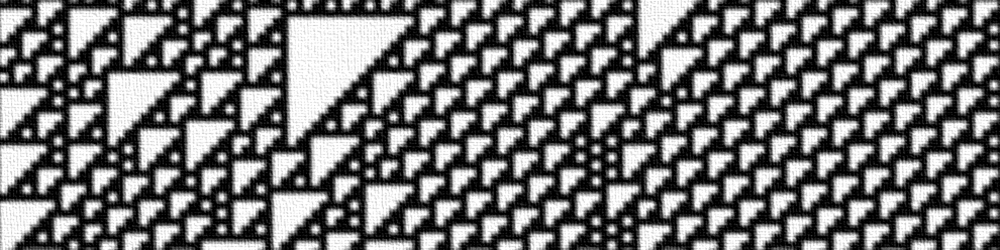
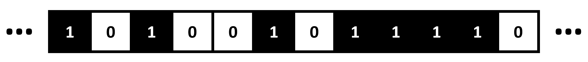
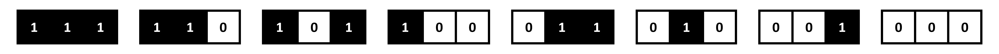
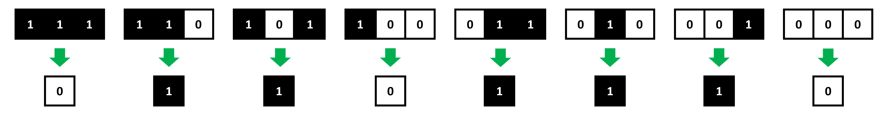
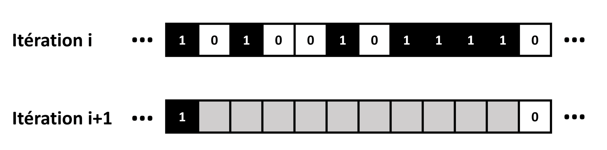
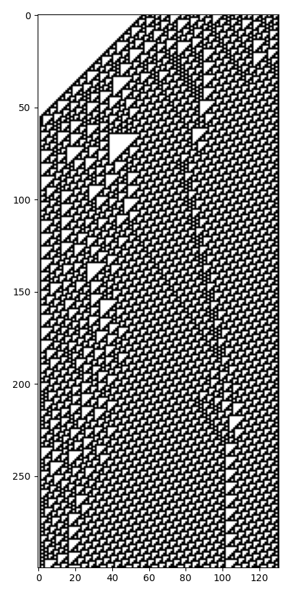

Préparation : De la programmation procédurale vers l'orienté objet

Lors de ce TP, nous allons réviser la programmation procédurale en Python. Vous devrez programmer un automate cellulaire élémentaire, en complétant petit à petit les fonctions d'un programme. En fin de TP, nous réfléchirons à la manière dont ce programme pourrait être transformé en paradigme orienté objet.
Les automates cellulaires élémentaires
On appelle automate cellulaire élémentaire un algorithme itératif qui va initialiser une matrice 1D infinie, dont les éléments ne peuvent prendre que les valeurs 0 ou 1 :

A chaque itération, chaque élément de la matrice change ou non de valeur, suivant une série de règles sur :
-
La valeur de l'élément à sa gauche.
-
La valeur de l'élément à sa droite.
-
La valeur de l'élément lui-même.
Pour chaque élément, il n'y a donc que 8 configurations possibles :

Il suffit donc de définir la valeur que prendra l'élément dans ces 8 situations pour obtenir les règles d'un automate cellulaire élémentaire.
On en déduit qu'il n'existe que 256 jeux de règles possibles, soit autant d'automates cellulaires élémentaires différents.
En 1983, le mathématicien anglais Stephen Wolfram a proposé une manière d'identifier ces 256 automates, avec un numéro.
Si nous définissons la valeur que prend un élément d'un automate dans les 8 configurations possibles, dans cet ordre :

On obtient la série de nombres binaires 01101110, qui correspond en décimal à 110.
Ce numéro, que l'on nomme code de Wolfram, sera l'identifiant de cet automate. On parlera aussi de "règle n°110".
Voici l'évolution de l'automate cellulaire n°110 pour une itération :

Il est bien entendu impossible de simuler l'évoluation d'une matrice 1D infinie avec un ordinateur. On définira donc une matrice 1D de dimensions finies, et on pourra choisir de gèrer les cas sur les bords de différentes façons :
-
Ne jamais faire varier les cases sur les bords.
-
Faire comme si une case imaginaire à gauche du bord gauche était à 0 et une case imaginaire à droite du bord droit était à 0.
-
Faire comme si la case à gauche du bord gauche était la case du bord droit, et la case à droite du bord droit était la case du bord gauche.
Vérifions si vous avez tout compris : quelles sont les règles de l'automate n°90 ? Si nous initialisons l'automate avec 010110100, quelle serait l'état de l'automate à l'itération suivante (en ne faisant pas varier les bords) ?
Lors de ce TP, nous allons programmer un automate cellulaire élémentaire de code de Wolfram donné, pour un nombres d'itérations donné un état initial donné.
Nous allons diviser ce problème complexe en fonctions simples : nous ferons donc ici de la programmation procédurale.
N'oubliez pas d'importer Numpy et Matplotlib au début de votre programme !
Déterminer les règles de l'automate
Pour commencer, il nous faut des fonctions pour convertir le numéro d'un automate cellulaire en ses 8 règles.
Complétez la fonction nb_to_bin suivante :
def nb_to_bin(rule_number):
#Complétez ici
return wolfram_code
Elle prendra en entrée un entier rule_number correspondant au numéro de la règle de l'automate.
Elle retournera en sortie une chaîne de caractères wolfram_code, contenant la conversion en binaire de l'entier rule_number.
Cette chaîne de caractère contiendra toujours 8 caractères.
| Aide |
|---|
| Pour convertir un nombre décimal en binaire, il suffit d'appliquer des divisions entières par 2 à ce nombre, jusqu'à ce que le quotient devienne nul. La juxtaposition des restes est la conversion en binaire du nombre. |
En Python, l'opérateur de la division entière est //, celui du reste de la division entière est %. |
Proposez une ligne de commande Python pour tester votre fonction sur un exemple. Obtenez-vous bien le résulat attendu ?
Complétez ensuite la fonction bin_to_rule suivante :
def bin_to_rule(wolfram_code):
#Complétez ici
return rule_dict
Elle prendra en entrée une chaîne de 8 caractères wolfram_code, telle que renvoyée par la fonction nb_to_bin.
Elle retournera en sortie un dictionnaire contenant les clés '111', '110', '101', '100', '011', '010', '001' et '000', correspondant aux configurations possibles pour chaque élément de l'automate.
Chaque clé contiendra '0' ou '1' suivant les règles de l'automate.
Nous nous servirons du dictionnaire de règles généré par la fonction bin_to_rule afin de déterminer les changements des valeurs d'un automate d'une itération à une autre.
Initialiser l'automate
Nous allons à présent programmer une fonction pour définir l'état initial d'un automate cellulaire.
Complétez la fonction init_automaton suivante :
def init_automaton(init_sequence):
#Complétez ici
return auto_vect
Elle prendra en entrée une chaîne de caractères init_sequence, ne contenant que des '0' ou des '1'.
Elle retournera en sortie une matrice Numpy 1D contenant la même séquence de 0 et de 1, sous la forme d'entiers.
Mettre à jour l'automate
Nous pouvons à présent déterminer les règles d'un automate, et l'initialiser. Il nous faut maintenant une fonction pour le mettre à jour à chaque itération, en se basant sur les règles déterminées.
Complétez la fonction update_automaton suivante :
def update_automaton(auto_vect,rule_dict):
#Complétez ici
return auto_vect
Elle prendra en entrée une matrice Numpy 1D auto_vect contenant l'état de l'automate à une itération donnée, et rule_dict un dictionnaire tel que renvoyé par la fonction bin_to_rule.
Elle retournera en sortie une matrice Numpy 1D auto_vect, contenant l'état de l'automate à l'itération suivante, déterminé à partir des règles de l'automate.
| Aide |
|---|
Pour réaliser une copie indépendante d'une matrice Numpy, il faut utiliser la méthode copy de Numpy. |
Pour convertir une valeur en entier ou en chaîne de caractère, on peut utiliser les méthodes natives de Python int et str. |
Proposez une ligne de commande Python pour tester votre fonction sur un exemple d'automate. Obtenez-vous bien le résulat attendu ?
Itération de l'automate
Ça y est, nous avons à présent toutes les fonctions dont nous avons besoin pour faire tourner un automate cellulaire élémentaire.
Nous allons définir une fonction appellant les fonction programmées précédemment, pour itérer un automate cellulaire donné, un nombre de fois donné, pour une initialisation donnée.
Complétez la fonction iterate_automaton suivante :
def iterate_automaton(init_sequence,rule_number,nb_iterations):
#Complétez ici
return auto_mat
Elle prendra en entrée une chaîne de caractères init_sequence contenant la séquence de '0' et de '1' pour initialiser l'automate, un entier rule_number correspondant au numéro de règles (code de Wolfram) de l'automate, et un entier nb_iterations correspondant au nombre d'itérations pour lequel faire tourner l'automate.
Elle retournera en sortie une matrice Numpy 2D concaténant verticalement les états de l'automate au fil des itérations.
Affichage de la simulation
Votre automate cellulaire est prêt à tourner !
Nous allons le tester en affichant la matrice Numpy 2D obtenue en sortie de iterate_automaton sous la forme d'une image en noir et blanc : un pixel blanc correspond à un 0, un pixel noir correspond à un 1.
Voici une fonction display_automaton, qui vous permettra de réaliser un tel affichage à partir d'une matrice Numpy 2D auto_mat.
def display_automaton(auto_mat):
plt.imshow(auto_mat,cmap='binary')
Faites tourner l'automate n°110 pendant 300 itérations, avec la séquence d'initialisation suivante :
'000000000000000000000000000000000000000000000000000000001110110100 10001100000100111010110001011000001110111001100100100011001011001'
Si vous affichez la matrice 2D obtenue sous la forme d'une image, vous devriez obtenir :

L'automate cellulaire élémentaire de règle n°110 est connu pour son comportement complexe, ni complètement chaotique, ni complètement ordonné, où des motifs semblent se déplacer et s'entrechoquer. Pour cette raison, il est souvent considéré comme le plus intéressant des automates cellulaires élémentaires.
Mais vous pouvez essayer d'autres règles ! Par exemple, les règles 30 et 90 donnent aussi des motifs amusants.
Vers l'orienté objet
Lors de ce TP, nous avons programmé les automates cellulaires élémentaires en paradigme procédural, afin de vous faire réviser les bases de la programmation avec Python. Cependant, programmer en paradigme orienté objet aurait ici été très pertinent.
En effet, on peut voir un automate cellulaire élémentaire comme une classe d'automate, contenant des règles et une matrice 1D à laquelle peuvent s'appliquer des méthodes qui vont en changer les valeurs.
Avez-vous une idée des attributs et méthodes nécessaires à un automate cellulaire élémentaire ?
Transformons notre programme en orienté objet.
Ouvrez un nouveau fichier Python, qui contiendra la classe cellular_automaton suivante :
class cellular_automaton:
def __init__(self,init_sequence,rule_number):
self.set_rules(rule_number)
self.set_grid(init_sequence)
self.iteration = 0
def set_rules(self,rule_number):
#Complétez ici
def get_rules(self):
#Complétez ici
def set_grid(self):
#Complétez ici
def get_grid(self):
#Complétez ici
def update(self);
#Complétez ici
def iterate(self,nb_iterations):
#Complétez ici
def display(self):
#Complétez ici
Essayez de compléter la classe cellular_automaton en vous basant sur les fonctions que vous avez programmées précédemment.
Créez une instance de votre automate pour la règle n°110, et faites un affichage du résultat de 300 itérations, pour la même séquence d'initialisation que précédemment. Vérifiez que vous obtenez bien le même résultat.
Bravo ! Vous avez écrit votre 1er programme en orienté objet ! Lors des TP suivants, nous programmerons des automates cellulaires plus complexes, directement dans ce paradigme.